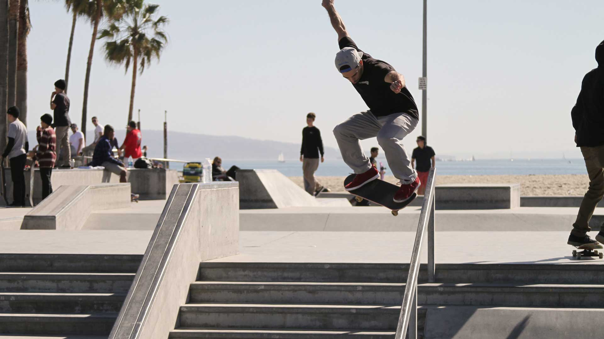

<!doctype html>
<html lang="en">

<head>
    <meta charset="utf-8">
    <meta http-equiv="X-UA-Compatible" content="IE=edge">
    <meta name="viewport" content="initial-scale=1,user-scalable=no,maximum-scale=1,width=device-width">
    <meta name="mobile-web-app-capable" content="yes">
    <meta name="apple-mobile-web-app-capable" content="yes">
    <link rel="stylesheet" href="css/leaflet.css">
    <link rel="stylesheet" href="css/L.Control.Locate.min.css">
    <link rel="stylesheet" href="css/qgis2web.css">
    <link rel="stylesheet" href="css/fontawesome-all.min.css">
    <link rel="stylesheet" href="css/leaflet-measure.css">
    <style>
        #map {
            width: 1145px;
            height: 852px;
        }
        
        .customTooltip {
            background-color: white;
            font-size: 1rem;
            border: 4px solid #3c9bad;
            color: #3c9bad;
        }
        
        .customTooltip p {
            margin: 2px;
        }
    </style>
    <title></title>
</head>

<body>
    <div id="map">
    </div>
    <script src="js/qgis2web_expressions.js"></script>
    <script src="js/leaflet.js"></script>
    <script src="js/L.Control.Locate.min.js"></script>
    <script src="js/multi-style-layer.js"></script>
    <script src="js/leaflet.rotatedMarker.js"></script>
    <script src="js/leaflet.pattern.js"></script>


    <script src="js/rbush.min.js"></script>
    <script src="js/labelgun.min.js"></script>
    <script src="js/labels.js"></script>


    <!-- Datensätze -->
    <script src="data/gpximport_1.js"></script>
    <script src="data/geojson.js"></script>
    <script>
        // Company Server Daten
        var CS = {

            //  Standort-Karte
            //  ------------------------------------------------------------------------------------
            "mapOptions": {
                zoomControl: true,
                maxZoom: 28,
                minZoom: 1,
                center: L.latLng(47.95894548305854, 14.776692646076338)
            },

            // geoJSON-Layer1: Kleine Standorte mit Tooltip
            //  ------------------------------------------------------------------------------------
            "geojSONName": "Standorte Klein",

            "geoJSONStyles": {
                radius: 10,
                fillColor: "#3c9bad",
                color: "white",
                weight: 1,
                opacity: 1,
                fillOpacity: 0.8
            },

            "geoJSONTooltipOptions": {
                noHide: true,
                permanent: true,
                interactive: true,
                className: 'customTooltip',
                direction: 'top'
            },

            // Standorte-Layer: Große Marker mit Tooltip
            //  ------------------------------------------------------------------------------------
            "locationsName": "Standorte Groß",

            "locations": [
                [47.961046, 14.774788],
                [47.971046, 14.774788]
            ],

            "locationMarkerOptions": {
                //iconUrl: 'markers/marker.svg',
                iconUrl: "data:image/svg+xml;base64," + window.btoa(
                    '<svg xmlns="http://www.w3.org/2000/svg" viewBox="0 0 80 80"><defs><style>.cls-1{isolation:isolate;}.cls-2{fill:#3c9bad;}.cls-3{fill:#fff;}.cls-4{mix-blend-mode:multiply;}</style></defs><g class="cls-1"><g id="Ebene_1" data-name="Ebene 1"><polygon class="cls-2" points="40 73.65 49.96 38.11 30.04 38.11 40 73.65"/><circle class="cls-2" cx="40" cy="28.88" r="20.88"/><circle class="cls-3" cx="40" cy="28.88" r="12.21"/></g></g></svg>'
                ),


                iconSize: [100, 100], // size of the icon
                shadowSize: [50, 64], // size of the shadow
                iconAnchor: [50, 75], // point of the icon which will correspond to marker's location
                shadowAnchor: [4, 62], // the same for the shadow
                popupAnchor: [-3, -76] // point from which the popup should open relative to the iconAnchor
            },

            "locationMarkerTooltip": "<p>Tooltip</p>",

            "locationMarkerTooltipOptions": {
                direction: 'center',
                permanent: false,
                interactive: true,
                noWrap: false,
                opacity: 1,
                offset: L.point(-100, 80),
                className: "customTooltip"
            },

            "locationMarkerPopup": "<h1>Popup-Inhalt</h1>",

            "locationMarkerPopupOptions": "",

            // Bild-Layer: Offline Kartenausschnitt
            //  ------------------------------------------------------------------------------------
            "imageOverlayName": "Offline-Karte",

            "imageOverlaySrc": 'data/kartenexport_0.png',

            "imageOverlayBounds": [
                [47.941233249999996, 14.75356035306917],
                [47.978900763, 14.80427590393084]
            ],


            //  geoJSON-Layer3: Themenweg
            //  ------------------------------------------------------------------------------------
            "geoJSON3Name": "GeoJson-Test",

            "geoJSON3Style": function(feature) {
                switch (feature.properties.party) {
                    case 'Republican':
                        return {
                            color: "#ff0000"
                        };
                    case 'Democrat':
                        return {
                            color: "#0000ff"
                        };
                }
            },

            "geoJSON3PointToLayer": function(feature, latlng) {
                return L.circleMarker(latlng);
            },

            "geoJSON3OnEachFeature": function standorteOnEachFeature(feature, standorte) {
                standorte.bindTooltip(feature.properties.name.toString(), {
                    noHide: true,
                    permanent: true,
                    interactive: true,
                    className: 'custom-tooltip',
                    direction: 'top'
                });
                tooltip = standorte.getTooltip();
                standorte.on('click', function(event) {
                    if (feature.properties.stateId) {
                        console.log(feature.properties.stateId);
                        var message = {
                            'action': 'state-change',
                            'state': feature.properties.stateId
                        };

                        window.parent.postMessage(message, "*");
                    }
                });
            }
        }

        // SpecialPlaces: Punkte mit Info-Overlay und Icons je Kategorie
        //  ------------------------------------------------------------

        var specialLocations = [{
            location: [47.961046, 14.774788],
            markerOptions: {
                iconUrl: "data:image/svg+xml;base64," + window.btoa(
                    '<svg xmlns="http://www.w3.org/2000/svg" viewBox="0 0 80 80"><defs><style>.cls-1{isolation:isolate;}.cls-2{fill:#3c9bad;}.cls-3{fill:#fff;}.cls-4{mix-blend-mode:multiply;}</style></defs><g class="cls-1"><g id="Ebene_1" data-name="Ebene 1"><polygon class="cls-2" points="40 73.65 49.96 38.11 30.04 38.11 40 73.65"/><circle class="cls-2" cx="40" cy="28.88" r="20.88"/><circle class="cls-3" cx="40" cy="28.88" r="12.21"/></g></g></svg>'),
                iconSize: [100, 100], // size of the icon
                shadowSize: [50, 64], // size of the shadow
                iconAnchor: [50, 75], // point of the icon which will correspond to marker's location
                shadowAnchor: [4, 62], // the same for the shadow
                popupAnchor: [-3, -76] // point from which the popup should open relative to the iconAnchor
            },
            popup: "<h1>Erster Marker</h1>",
            popupOptions: "",
        }, {
            location: [47.96273699537764, 14.771472348820074],
            markerOptions: {
                iconUrl: "data:image/svg+xml;base64," + window.btoa(
                    '<svg xmlns="http://www.w3.org/2000/svg" viewBox="0 0 80 80"><defs><style>.cls-1{isolation:isolate;}.cls-2{fill:#3c9bad;}.cls-3{fill:#fff;}.cls-4{mix-blend-mode:multiply;}</style></defs><g class="cls-1"><g id="Ebene_1" data-name="Ebene 1"><polygon class="cls-2" points="40 73.65 49.96 38.11 30.04 38.11 40 73.65"/><circle class="cls-2" cx="40" cy="28.88" r="20.88"/><circle class="cls-3" cx="40" cy="28.88" r="12.21"/></g></g></svg>'),
                iconSize: [100, 100], // size of the icon
                shadowSize: [50, 64], // size of the shadow
                iconAnchor: [50, 75], // point of the icon which will correspond to marker's location
                shadowAnchor: [4, 62], // the same for the shadow
                popupAnchor: [-3, -76] // point from which the popup should open relative to the iconAnchor
            },
            popup: "<h1>Krautbergkreuz</h1>",
            popupOptions: "",
        }];


        //  Map Initialisierung mit Options
        //  ------------------------------------------------------------------------------------
        var map = L.map('map', CS.mapOptions).fitBounds([
            [47.94026664379482, 14.75229246429763],
            [47.979867369205174, 14.805543792702382]
        ]);


        // Special locations
        // -------------------------------------------------------------

        var specialLocationsLayer = L.layerGroup();
        specialLocations.forEach(element => {
            console.log(element);

            var customIcon = L.icon(element.markerOptions);
            var customMarker = L.marker(element.location, {
                icon: customIcon
            });

            //customMarker.bindTooltip(CS.locationMarkerTooltip, CS.locationMarkerTooltipOptions).openTooltip();
            customMarker.bindPopup(element.popup, element.popupOptions);
            specialLocationsLayer.addLayer(customMarker);
        })

        specialLocationsLayer.addTo(map);


        // Bild-Layer: Image Overlay
        // ------------------------------------------------------------------------------------
        map.createPane('pane_kartenexport_0');

        var imageOverlay = new L.imageOverlay(CS.imageOverlaySrc, CS.imageOverlayBounds);
        map.addLayer(imageOverlay);


        // Weg-Layer: gpx-export to geoJson
        // ------------------------------------------------------------------------------------

        var weg = new L.geoJson(json_gpximport_1, {
            style: CS.geoJSON2Styles
        });

        weg.bindPopup(CS.geoJSON2Popup, CS.geoJSON2PopupOptions);
        weg.bindTooltip(CS.geoJSON2Tooltip, CS.geoJSON2TooltipOptions);

        map.addLayer(weg);

        // geoJson-Layer: 3 Punkte im Zentrum
        // ------------------------------------------------------------------------------------

        var geoJsonLayer = new L.geoJson(standorte2, {
            style: CS.geoJSON3Style,
            pointToLayer: CS.geoJSON3PointToLayer,
            onEachFeature: CS.geoJSON3OnEachFeature
        });

        //weg.bindPopup(CS.geoJSON2Popup, CS.geoJSON2PopupOptions);
        //weg.bindTooltip(CS.geoJSON2Tooltip, CS.geoJSON2TooltipOptions);

        map.addLayer(geoJsonLayer);


        // Open Streetsmap: Online Map
        // ------------------------------------------------------------------------------------
        var openstreets = L.tileLayer('https://{s}.tile.openstreetmap.org/{z}/{x}/{y}.png', {
            attribution: '&copy; <a href="https://www.openstreetmap.org/copyright">OpenStreetMap</a> contributors'
        });


        // Layer-Controls
        var baseMaps = {
            [CS.imageOverlayName]: imageOverlay,
            "Open Street Map": openstreets
        };

        var overlayMaps = {
            [CS.geoJSON2Name]: weg,
            "Special Locations": specialLocationsLayer,
            [CS.geoJSON3Name]: geoJsonLayer
        };

        // Plugin: Benutzerposition
        L.control.locate({
            locateOptions: {
                maxZoom: 19
            }
        }).addTo(map);

        L.control.layers(baseMaps, overlayMaps).addTo(map);
    </script>
</body>

</html>